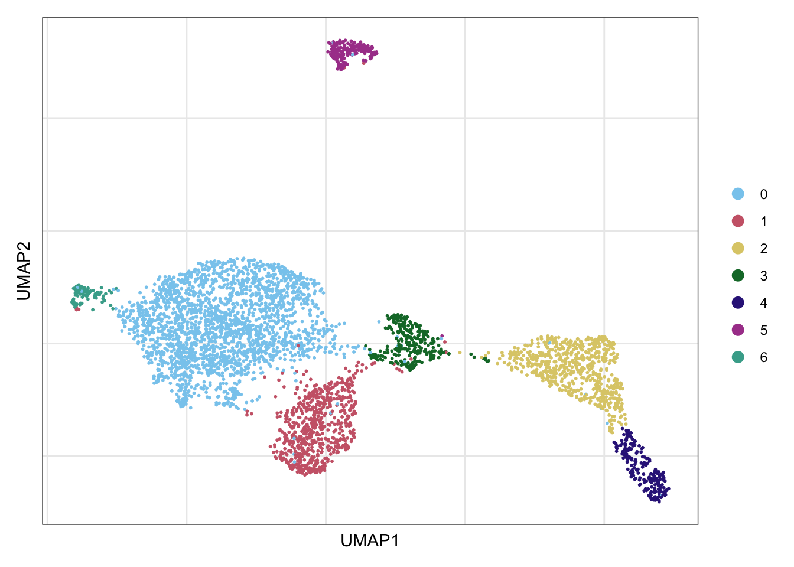
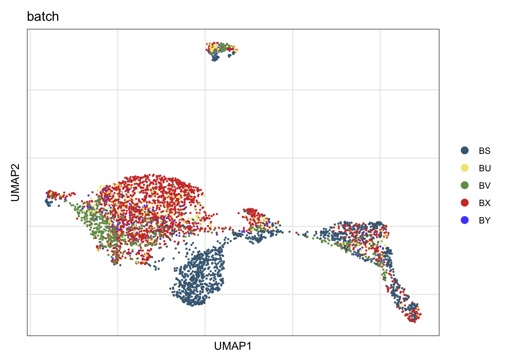
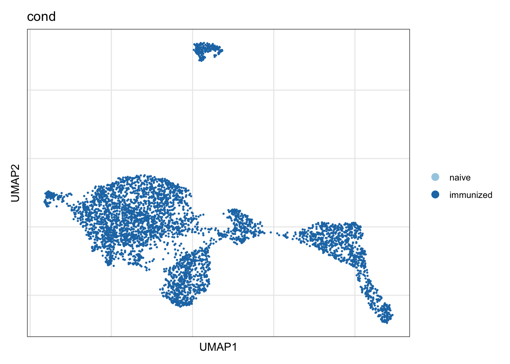

characterization PP data
Mechthild Lütge
16 June 2020
Last updated: 2021-05-25
Checks: 6 1
Knit directory: CrossSLO_BRC_CXCL13/
This reproducible R Markdown analysis was created with workflowr (version 1.6.2). The Checks tab describes the reproducibility checks that were applied when the results were created. The Past versions tab lists the development history.
The R Markdown is untracked by Git. To know which version of the R Markdown file created these results, you’ll want to first commit it to the Git repo. If you’re still working on the analysis, you can ignore this warning. When you’re finished, you can run wflow_publish to commit the R Markdown file and build the HTML.
Great job! The global environment was empty. Objects defined in the global environment can affect the analysis in your R Markdown file in unknown ways. For reproduciblity it’s best to always run the code in an empty environment.
The command set.seed(20210519) was run prior to running the code in the R Markdown file. Setting a seed ensures that any results that rely on randomness, e.g. subsampling or permutations, are reproducible.
Great job! Recording the operating system, R version, and package versions is critical for reproducibility.
Nice! There were no cached chunks for this analysis, so you can be confident that you successfully produced the results during this run.
Great job! Using relative paths to the files within your workflowr project makes it easier to run your code on other machines.
Great! You are using Git for version control. Tracking code development and connecting the code version to the results is critical for reproducibility.
The results in this page were generated with repository version b4f7258. See the Past versions tab to see a history of the changes made to the R Markdown and HTML files.
Note that you need to be careful to ensure that all relevant files for the analysis have been committed to Git prior to generating the results (you can use wflow_publish or wflow_git_commit). workflowr only checks the R Markdown file, but you know if there are other scripts or data files that it depends on. Below is the status of the Git repository when the results were generated:
Ignored files:
Ignored: .Rhistory
Ignored: .Rproj.user/
Ignored: analysis/figure/
Untracked files:
Untracked: analysis/CharacterizationLN_CXCL13seurat.Rmd
Untracked: analysis/CharacterizePP_CXCL13seurat.Rmd
Untracked: analysis/CharacterizeSpleen_CXCL13seurat.Rmd
Note that any generated files, e.g. HTML, png, CSS, etc., are not included in this status report because it is ok for generated content to have uncommitted changes.
There are no past versions. Publish this analysis with wflow_publish() to start tracking its development.
load packages
suppressPackageStartupMessages({
library(tidyverse)
library(Seurat)
library(magrittr)
library(dplyr)
library(purrr)
library(ggplot2)
library(here)
library(runSeurat3)
library(SingleCellExperiment)
library(RColorBrewer)
library(viridis)
library(ggsci)
library(scater)
library(scran)
library(pheatmap)
library(CellMixS)
library(muscat)
library(edgeR)
library(rcartocolor)
library(harmony)
})set dir and read input data
basedir <- here()
sce <- readRDS(paste0(basedir, "/data/allSamplesMerged_plusDR_sce.rds"))
sce <- sce[,sce$SLO =="PP"]set color Vectors
colorSLO <- c(viridis(3)[c(1,2)], brewer.pal(n=9, name="YlOrRd")[c(4)])
colorCond <- brewer.pal(n=3, name="Paired")[c(1,2)]
colorSLOCond <- c("#440154FF","#807DBA", "#FEB24C", "#F16913", "#21908CFF")
colorBatch <- pal_igv()(n=length(unique(sce$batch)))
# set colorPal names
names(colorSLO) <- c("LN", "PP", "Spleen")
names(colorCond) <- c("naive", "immunized")
names(colorBatch) <- unique(sce$batch)
names(colorSLOCond) <- c("LN_immunized","LN_naive", "Spleen_naive",
"Spleen_immunized", "PP_immunized")
colPal <- rcartocolor::carto_pal(name="Safe")run seurat pipeline
seurat <- as.Seurat(sce)
## only Cxcl13 positive
seurat <- subset(seurat, subset = ENSMUSG00000023078.Cxcl13 >0)
seurat <- rerunSeurat3(seurat)Modularity Optimizer version 1.3.0 by Ludo Waltman and Nees Jan van Eck
Number of nodes: 4453
Number of edges: 147517
Running Louvain algorithm...
Maximum modularity in 10 random starts: 0.9184
Number of communities: 8
Elapsed time: 0 seconds
Modularity Optimizer version 1.3.0 by Ludo Waltman and Nees Jan van Eck
Number of nodes: 4453
Number of edges: 147517
Running Louvain algorithm...
Maximum modularity in 10 random starts: 0.8515
Number of communities: 12
Elapsed time: 0 seconds
Modularity Optimizer version 1.3.0 by Ludo Waltman and Nees Jan van Eck
Number of nodes: 4453
Number of edges: 147517
Running Louvain algorithm...
Maximum modularity in 10 random starts: 0.8273
Number of communities: 14
Elapsed time: 0 seconds
Modularity Optimizer version 1.3.0 by Ludo Waltman and Nees Jan van Eck
Number of nodes: 4453
Number of edges: 147517
Running Louvain algorithm...
Maximum modularity in 10 random starts: 0.8846
Number of communities: 9
Elapsed time: 0 secondsdim(seurat)[1] 29568 4453## cluster 0,1,2,7 : LP FRCs (Adamdec1)
## cluster 3: TRC/TBRC/MRC
## cluster 5: adventitial cells (Cd34)
## cluster 4: subepithelial fibroblasts (Adamdec1, Bmp5)
## cluster 6: FDC
## cluster 9: myocytes (Esam, Cnn1, Lmod)
## cluster 10: neurons (Pcdh8, Ptn, Cpe, Gdf10)
## cluster 11: proliferating (mki67)
## remove cluster xxx as contaminating cells (mki67, Ptn, Cnn1)
Idents(seurat) <- seurat$RNA_snn_res.0.6
seurat <- subset(seurat, idents=c("10", "11"), invert=T)
seurat <- rerunSeurat3(seurat, res = c(0.6, 0.8, 0.4, 0.25))Modularity Optimizer version 1.3.0 by Ludo Waltman and Nees Jan van Eck
Number of nodes: 4416
Number of edges: 147620
Running Louvain algorithm...
Maximum modularity in 10 random starts: 0.8498
Number of communities: 9
Elapsed time: 0 seconds
Modularity Optimizer version 1.3.0 by Ludo Waltman and Nees Jan van Eck
Number of nodes: 4416
Number of edges: 147620
Running Louvain algorithm...
Maximum modularity in 10 random starts: 0.8244
Number of communities: 13
Elapsed time: 0 seconds
Modularity Optimizer version 1.3.0 by Ludo Waltman and Nees Jan van Eck
Number of nodes: 4416
Number of edges: 147620
Running Louvain algorithm...
Maximum modularity in 10 random starts: 0.8826
Number of communities: 8
Elapsed time: 0 seconds
Modularity Optimizer version 1.3.0 by Ludo Waltman and Nees Jan van Eck
Number of nodes: 4416
Number of edges: 147620
Running Louvain algorithm...
Maximum modularity in 10 random starts: 0.9176
Number of communities: 7
Elapsed time: 0 secondsvisualize data
clustering
DimPlot(seurat, reduction = "umap", cols=colPal)+
theme_bw() +
theme(axis.text = element_blank(), axis.ticks = element_blank(),
panel.grid.minor = element_blank()) +
xlab("UMAP1") +
ylab("UMAP2")
## cluster 0,1,5 : LP FRCs (Adamdec1)
## cluster 3: TRC/TBRC/MRC
## cluster 4: adventitial cells (Cd34)
## cluster 2: subepithelial fibroblasts (Adamdec1, Bmp5)
## cluster 6: FDC
## cluster 8: contamination (Esam, Cnn1, Lmod)Batch
DimPlot(seurat, reduction = "umap", cols=colorBatch, group.by = "batch")+
theme_bw() +
theme(axis.text = element_blank(), axis.ticks = element_blank(),
panel.grid.minor = element_blank()) +
xlab("UMAP1") +
ylab("UMAP2")
Cond
DimPlot(seurat, reduction = "umap", cols=colorCond, group.by = "cond")+
theme_bw() +
theme(axis.text = element_blank(), axis.ticks = element_blank(),
panel.grid.minor = element_blank()) +
xlab("UMAP1") +
ylab("UMAP2")
vis QC
total features
FeaturePlot(seurat, reduction = "umap", features = "total_features_by_counts",
cols = c("lightgrey", "darkred")) +
theme_bw() +
theme(axis.text = element_blank(), axis.ticks = element_blank(),
panel.grid.minor = element_blank()) +
xlab("UMAP1") +
ylab("UMAP2")
total counts
FeaturePlot(seurat, reduction = "umap", features = "total_counts",
cols = c("lightgrey", "darkred")) +
theme_bw() +
theme(axis.text = element_blank(), axis.ticks = element_blank(),
panel.grid.minor = element_blank()) +
xlab("UMAP1") +
ylab("UMAP2")
percentage mt counts
FeaturePlot(seurat, reduction = "umap", features = "pct_counts_Mt",
cols = c("lightgrey", "darkred")) +
theme_bw() +
theme(axis.text = element_blank(), axis.ticks = element_blank(),
panel.grid.minor = element_blank()) +
xlab("UMAP1") +
ylab("UMAP2")
Find marker
seurat_markers_all <- FindAllMarkers(object = seurat, assay ="RNA",
only.pos = TRUE, min.pct = 0.25,
logfc.threshold = 0.25,
test.use = "wilcox")
write.table(seurat_markers_all,
file=paste0(basedir, "/data/PP_marker_SeuratClust.txt"),
row.names = FALSE, col.names = TRUE, quote = FALSE, sep = "\t")
saveRDS(seurat, file=paste0(basedir, "/data/PP_seurat.rds"))expression of Xist
all
FeaturePlot(seurat, reduction = "umap", features = "ENSMUSG00000086503.Xist",
cols = c("lightgrey", "darkred")) +
theme_bw() +
theme(axis.text = element_blank(), axis.ticks = element_blank(),
panel.grid.minor = element_blank()) +
xlab("UMAP1") +
ylab("UMAP2")
batch X
seuratS <- subset(seurat, batch=="BX")
FeaturePlot(seuratS, reduction = "umap", features = "ENSMUSG00000086503.Xist",
cols = c("lightgrey", "darkred")) +
theme_bw() +
theme(axis.text = element_blank(), axis.ticks = element_blank(),
panel.grid.minor = element_blank()) +
xlab("UMAP1") +
ylab("UMAP2")
batch Y
seuratS <- subset(seurat, batch=="BY")
FeaturePlot(seuratS, reduction = "umap", features = "ENSMUSG00000086503.Xist",
cols = c("lightgrey", "darkred")) +
theme_bw() +
theme(axis.text = element_blank(), axis.ticks = element_blank(),
panel.grid.minor = element_blank()) +
xlab("UMAP1") +
ylab("UMAP2")
batch V
seuratS <- subset(seurat, batch=="BV")
FeaturePlot(seuratS, reduction = "umap", features = "ENSMUSG00000086503.Xist",
cols = c("lightgrey", "darkred")) +
theme_bw() +
theme(axis.text = element_blank(), axis.ticks = element_blank(),
panel.grid.minor = element_blank()) +
xlab("UMAP1") +
ylab("UMAP2")
remove(seuratS)re-embedding FDCs/MRCs/TRCs/TBRCs
## exclude batchS (analyse individually)
seuratSub <- subset(seurat, idents=c("4"))
seuratSub$orig <- seuratSub$seurat_clusters
seuratSub <- rerunSeurat3(seuratSub, res = c(0.8, 0.4, 0.3, 0.5, 0.6))Modularity Optimizer version 1.3.0 by Ludo Waltman and Nees Jan van Eck
Number of nodes: 210
Number of edges: 6706
Running Louvain algorithm...
Maximum modularity in 10 random starts: 0.6160
Number of communities: 4
Elapsed time: 0 seconds
Modularity Optimizer version 1.3.0 by Ludo Waltman and Nees Jan van Eck
Number of nodes: 210
Number of edges: 6706
Running Louvain algorithm...
Maximum modularity in 10 random starts: 0.7413
Number of communities: 3
Elapsed time: 0 seconds
Modularity Optimizer version 1.3.0 by Ludo Waltman and Nees Jan van Eck
Number of nodes: 210
Number of edges: 6706
Running Louvain algorithm...
Maximum modularity in 10 random starts: 0.7860
Number of communities: 2
Elapsed time: 0 seconds
Modularity Optimizer version 1.3.0 by Ludo Waltman and Nees Jan van Eck
Number of nodes: 210
Number of edges: 6706
Running Louvain algorithm...
Maximum modularity in 10 random starts: 0.7020
Number of communities: 3
Elapsed time: 0 seconds
Modularity Optimizer version 1.3.0 by Ludo Waltman and Nees Jan van Eck
Number of nodes: 210
Number of edges: 6706
Running Louvain algorithm...
Maximum modularity in 10 random starts: 0.6715
Number of communities: 4
Elapsed time: 0 secondsseurat_markers_sub <- FindAllMarkers(object = seuratSub, assay ="RNA",
only.pos = TRUE, min.pct = 0.25,
logfc.threshold = 0.25,
test.use = "wilcox")assign labels
## label cells
seurat$clusterLabel <- "LPFRC1"
seurat$clusterLabel[which(seurat$RNA_snn_res.0.25 == "1")] <- "LPFRC2"
seurat$clusterLabel[which(seurat$RNA_snn_res.0.25 == "6")] <- "LPFRC3"
seurat$clusterLabel[which(seurat$RNA_snn_res.0.25 == "3")] <- "adventitial"
seurat$clusterLabel[which(seurat$RNA_snn_res.0.25 == "5")] <- "subepithelial"
seurat$clusterLabel[which(seurat$RNA_snn_res.0.25 == "2")] <- "TBRC"
### label from re-embedding
lzfdc <- colnames(seuratSub)[which(seuratSub$RNA_snn_res.0.6 %in% c("0", "2"))]
dzfdc <- colnames(seuratSub)[which(seuratSub$RNA_snn_res.0.6 == "1")]
mrc <- colnames(seuratSub)[which(seuratSub$RNA_snn_res.0.6 == "3")]
seurat$clusterLabel[which(colnames(seurat) %in% lzfdc)] <- "LZFDC"
seurat$clusterLabel[which(colnames(seurat) %in% mrc)] <- "MRC"
seurat$clusterLabel[which(colnames(seurat) %in% dzfdc)] <- "DZFDC"
Idents(seurat) <- seurat$clusterLabelvis cluster label
colPal <- c("#2405BF", "#5151FC", "#4E85F2", "#37D3DE", "#FF9933", "#660000",
"#CC6600", "#FF6666", "#128961", "#A0A0A0", "#FFCCCC", "#467685")
names(colPal) <- c("LPFRC1", "LPFRC2","LPFRC3", "LPFRC4", "LZFDC","MRC","DZFDC",
"TBRC", "subepithelial", "adventitial", "TRC2", "LPPRC")
DimPlot(seurat, reduction = "umap", cols=colPal, shuffle=T)+
theme_bw() +
theme(axis.text = element_blank(), axis.ticks = element_blank(),
panel.grid.minor = element_blank()) +
xlab("UMAP1") +
ylab("UMAP2")
DimPlot(seurat, reduction = "umap", cols=colPal, shuffle=T,pt.size=0.6)+
theme_void()
vis cluster characterization
avgHeatmap <- function(seurat, selGenes, colVecIdent, colVecCond=NULL,
ordVec=NULL, gapVecR=NULL, gapVecC=NULL,cc=FALSE,
cr=FALSE, condCol=FALSE){
selGenes <- selGenes$gene
## assay data
clusterAssigned <- as.data.frame(Idents(seurat)) %>%
dplyr::mutate(cell=rownames(.))
colnames(clusterAssigned)[1] <- "ident"
seuratDat <- GetAssayData(seurat)
## genes of interest
genes <- data.frame(gene=rownames(seurat)) %>%
mutate(geneID=gsub("^.*\\.", "", gene)) %>% filter(geneID %in% selGenes)
## matrix with averaged cnts per ident
logNormExpres <- as.data.frame(t(as.matrix(
seuratDat[which(rownames(seuratDat) %in% genes$gene),])))
logNormExpres <- logNormExpres %>% dplyr::mutate(cell=rownames(.)) %>%
dplyr::left_join(.,clusterAssigned, by=c("cell")) %>%
dplyr::select(-cell) %>% dplyr::group_by(ident) %>%
dplyr::summarise_all(mean)
logNormExpresMa <- logNormExpres %>% dplyr::select(-ident) %>% as.matrix()
rownames(logNormExpresMa) <- logNormExpres$ident
logNormExpresMa <- t(logNormExpresMa)
rownames(logNormExpresMa) <- gsub("^.*?\\.","",rownames(logNormExpresMa))
## remove genes if they are all the same in all groups
ind <- apply(logNormExpresMa, 1, sd) == 0
logNormExpresMa <- logNormExpresMa[!ind,]
genes <- genes[!ind,]
## color columns according to cluster
annotation_col <- as.data.frame(gsub("(^.*?_)","",
colnames(logNormExpresMa)))%>%
dplyr::mutate(celltype=gsub("(_.*$)","",colnames(logNormExpresMa)))
colnames(annotation_col)[1] <- "col1"
annotation_col <- annotation_col %>%
dplyr::mutate(cond = gsub("(^[0-9]_?)","",col1)) %>%
dplyr::select(cond, celltype)
rownames(annotation_col) <- colnames(logNormExpresMa)
ann_colors = list(
cond = colVecCond,
celltype=colVecIdent)
if(is.null(ann_colors$cond)){
annotation_col$cond <- NULL
}
## adjust order
logNormExpresMa <- logNormExpresMa[selGenes,]
if(is.null(ordVec)){
ordVec <- levels(seurat)
}
logNormExpresMa <- logNormExpresMa[,ordVec]
## scaled row-wise
pheatmap(logNormExpresMa, scale="row" ,treeheight_row = 0, cluster_rows = cr,
cluster_cols = cc,
color = colorRampPalette(c("#2166AC", "#F7F7F7", "#B2182B"))(50),
annotation_col = annotation_col, cellwidth=15, cellheight=10,
annotation_colors = ann_colors, gaps_row = gapVecR, gaps_col = gapVecC)
}selMarker <- list(LZFDC = c("Fcer2a", "Fcamr", "Cr2", "Coch", "Sox9"),
MRC = c("Madcam1", "Cxcl13", "Tnfsf11"),
DZFDC = c("Pdlim3", "Crym", "Emp2", "Ecm1", "Trf", "Il6",
"Cxcl1", "Cxcl16", "Ptgs2", "Gstp1", "Cd151",
"Clec14a", "Plat", "Ptn", "Mmp3", "Dcn", "Cxcl12"),
TBRC = c("Fmod", "Ccl21a","Ccl19", "Vtn"),
adventitial = c("Ogn","Cd34", "Ly6c1", "Igfbp6"),
LPFRC = c("Cxcl10", "Cxcl9", "Adamdec1"),
sub = c("Bmp5", "Acta2")
)
selMarker <- list(LZFDC = c("Fcer2a", "Fcamr", "Cr2", "Coch", "Sox9"),
MRC = c("Madcam1", "Cxcl13", "Tnfsf11"),
DZFDC = c("Crym", "Pdlim3", "Emp2",
"Clec14a", "Dcn", "Cxcl12"),
TBRC = c("Fmod", "Ccl21a","Ccl19", "Vtn"),
adventitial = c("Ogn","Cd34", "Ly6c1", "Igfbp6"),
LPFRC = c("Cxcl10", "Cxcl9", "Adamdec1"),
sub = c("Bmp5", "Acta2")
)avg heatmap
selGenes <- data.frame(gene=unlist(selMarker)) %>%
rownames_to_column(var="grp") %>% mutate(Grp=gsub(".{1}$", "", grp))
grpCnt <- selGenes %>% group_by(Grp) %>% summarise(cnt=n())
gapR <- data.frame(Grp=unique(selGenes$Grp)) %>%
left_join(.,grpCnt, by="Grp") %>% mutate(cumSum=cumsum(cnt))
ordVec <- levels(seurat)[c(6,9,7,3,2,1,8,5,4)]
pOut <- avgHeatmap(seurat = seurat, selGenes = selGenes,
colVecIdent = colPal,
ordVec=ordVec,
gapVecR=gapR$cumSum, gapVecC=NULL,cc=F,
cr=F, condCol=F)
compare to all eyfp data
seuratEYFP <- readRDS(paste0("/Users/mechthildluetge/Projects/scRNAseq/",
"CrossSLO_BCR/data/PP_seurat.rds"))
seuratEYFPdat <- data.frame(labelOld=seuratEYFP$clusterLabel) %>%
rownames_to_column(var="cellname")
seuratdat <- data.frame(labelNew=seurat$clusterLabel) %>%
rownames_to_column(var="cellname") %>%
left_join(., seuratEYFPdat, by="cellname")
table(seuratdat$labelNew, seuratdat$labelOld)
adventitial DZFDC LPFRC1 LPFRC2 LPFRC3 LPPRC LZFDC MRC subepithelial TBRC
adventitial 46 0 2 1 0 227 0 0 0 0
DZFDC 0 62 0 0 0 0 0 0 0 0
LPFRC1 0 0 2278 3 7 0 0 1 1 0
LPFRC2 0 0 15 665 1 0 0 0 0 1
LPFRC3 0 0 0 0 96 0 0 0 0 0
LZFDC 0 0 0 0 0 0 110 0 0 0
MRC 0 0 0 0 0 0 0 38 0 0
subepithelial 0 0 1 0 0 0 0 0 189 0
TBRC 12 0 0 0 0 0 0 122 0 530seurat$labelOld <- seuratdat$labelOld
table(seurat$labelOld)
adventitial DZFDC LPFRC1 LPFRC2 LPFRC3 LPPRC LZFDC
58 62 2296 669 104 227 110
MRC subepithelial TBRC
161 190 531 table(seurat$clusterLabel)
adventitial DZFDC LPFRC1 LPFRC2 LPFRC3 LZFDC MRC
277 62 2293 683 97 110 38
subepithelial TBRC
191 665 DimPlot(seurat, reduction = "umap", cols=colPal, group.by="labelOld")+
theme_bw() +
theme(axis.text = element_blank(), axis.ticks = element_blank(),
panel.grid.minor = element_blank()) +
xlab("UMAP1") +
ylab("UMAP2")
##save seurat
Idents(seurat) <- seurat$clusterLabel
saveRDS(seurat, file=paste0(basedir, "/data/PP_seurat.rds"))session info
sessionInfo()R version 4.0.0 (2020-04-24)
Platform: x86_64-apple-darwin17.0 (64-bit)
Running under: macOS Catalina 10.15.7
Matrix products: default
BLAS: /Library/Frameworks/R.framework/Versions/4.0/Resources/lib/libRblas.dylib
LAPACK: /Library/Frameworks/R.framework/Versions/4.0/Resources/lib/libRlapack.dylib
locale:
[1] en_US.UTF-8/en_US.UTF-8/en_US.UTF-8/C/en_US.UTF-8/en_US.UTF-8
attached base packages:
[1] parallel stats4 stats graphics grDevices utils datasets methods base
other attached packages:
[1] harmony_1.0 Rcpp_1.0.6 rcartocolor_2.0.0
[4] edgeR_3.30.3 limma_3.44.3 muscat_1.2.1
[7] CellMixS_1.4.2 kSamples_1.2-9 SuppDists_1.1-9.5
[10] pheatmap_1.0.12 scran_1.16.0 scater_1.16.2
[13] ggsci_2.9 viridis_0.6.0 viridisLite_0.4.0
[16] RColorBrewer_1.1-2 SingleCellExperiment_1.10.1 SummarizedExperiment_1.18.2
[19] DelayedArray_0.14.1 matrixStats_0.58.0 Biobase_2.48.0
[22] GenomicRanges_1.40.0 GenomeInfoDb_1.24.2 IRanges_2.22.2
[25] S4Vectors_0.26.1 BiocGenerics_0.34.0 runSeurat3_0.1.0
[28] here_1.0.1 magrittr_2.0.1 SeuratObject_4.0.0
[31] Seurat_4.0.1 forcats_0.5.1 stringr_1.4.0
[34] dplyr_1.0.5 purrr_0.3.4 readr_1.4.0
[37] tidyr_1.1.3 tibble_3.1.1 ggplot2_3.3.3
[40] tidyverse_1.3.1
loaded via a namespace (and not attached):
[1] estimability_1.3 scattermore_0.7 coda_0.19-4
[4] bit64_4.0.5 knitr_1.33 multcomp_1.4-17
[7] irlba_2.3.3 data.table_1.14.0 rpart_4.1-15
[10] doParallel_1.0.16 RCurl_1.98-1.3 generics_0.1.0
[13] TH.data_1.0-10 cowplot_1.1.1 RSQLite_2.2.7
[16] RANN_2.6.1 future_1.21.0 bit_4.0.4
[19] spatstat.data_2.1-0 xml2_1.3.2 lubridate_1.7.10
[22] httpuv_1.6.0 assertthat_0.2.1 xfun_0.22
[25] hms_1.0.0 jquerylib_0.1.4 evaluate_0.14
[28] promises_1.2.0.1 progress_1.2.2 fansi_0.4.2
[31] caTools_1.18.2 dbplyr_2.1.1 readxl_1.3.1
[34] igraph_1.2.6 DBI_1.1.1 geneplotter_1.66.0
[37] htmlwidgets_1.5.3 spatstat.geom_2.1-0 ellipsis_0.3.1
[40] RSpectra_0.16-0 backports_1.2.1 annotate_1.66.0
[43] deldir_0.2-10 vctrs_0.3.7 ROCR_1.0-11
[46] abind_1.4-5 cachem_1.0.4 withr_2.4.2
[49] emmeans_1.6.0 sctransform_0.3.2 prettyunits_1.1.1
[52] goftest_1.2-2 cluster_2.1.2 lazyeval_0.2.2
[55] crayon_1.4.1 genefilter_1.70.0 labeling_0.4.2
[58] pkgconfig_2.0.3 nlme_3.1-152 vipor_0.4.5
[61] blme_1.0-5 rlang_0.4.10 globals_0.14.0
[64] lifecycle_1.0.0 miniUI_0.1.1.1 sandwich_3.0-0
[67] modelr_0.1.8 rsvd_1.0.5 cellranger_1.1.0
[70] rprojroot_2.0.2 polyclip_1.10-0 lmtest_0.9-38
[73] Matrix_1.3-2 boot_1.3-27 zoo_1.8-9
[76] reprex_2.0.0 beeswarm_0.3.1 ggridges_0.5.3
[79] GlobalOptions_0.1.2 png_0.1-7 rjson_0.2.20
[82] bitops_1.0-7 KernSmooth_2.23-18 blob_1.2.1
[85] DelayedMatrixStats_1.10.1 workflowr_1.6.2 shape_1.4.5
[88] parallelly_1.24.0 scales_1.1.1 memoise_2.0.0
[91] plyr_1.8.6 ica_1.0-2 gplots_3.1.1
[94] zlibbioc_1.34.0 compiler_4.0.0 dqrng_0.2.1
[97] clue_0.3-59 lme4_1.1-26 DESeq2_1.28.1
[100] fitdistrplus_1.1-3 cli_2.5.0 XVector_0.28.0
[103] lmerTest_3.1-3 listenv_0.8.0 patchwork_1.1.1
[106] pbapply_1.4-3 TMB_1.7.20 MASS_7.3-53.1
[109] mgcv_1.8-35 tidyselect_1.1.0 stringi_1.5.3
[112] highr_0.9 yaml_2.2.1 BiocSingular_1.4.0
[115] locfit_1.5-9.4 ggrepel_0.9.1 grid_4.0.0
[118] sass_0.3.1 tools_4.0.0 future.apply_1.7.0
[121] circlize_0.4.12 rstudioapi_0.13 foreach_1.5.1
[124] git2r_0.28.0 gridExtra_2.3 farver_2.1.0
[127] Rtsne_0.15 digest_0.6.27 shiny_1.6.0
[130] broom_0.7.6 later_1.2.0 RcppAnnoy_0.0.18
[133] httr_1.4.2 AnnotationDbi_1.50.3 ComplexHeatmap_2.4.3
[136] colorspace_2.0-0 rvest_1.0.0 XML_3.99-0.6
[139] fs_1.5.0 tensor_1.5 reticulate_1.19
[142] splines_4.0.0 uwot_0.1.10 statmod_1.4.35
[145] spatstat.utils_2.1-0 plotly_4.9.3 xtable_1.8-4
[148] jsonlite_1.7.2 nloptr_1.2.2.2 R6_2.5.0
[151] pillar_1.6.0 htmltools_0.5.1.1 mime_0.10
[154] glue_1.4.2 fastmap_1.1.0 minqa_1.2.4
[157] BiocParallel_1.22.0 BiocNeighbors_1.6.0 codetools_0.2-18
[160] mvtnorm_1.1-1 utf8_1.2.1 lattice_0.20-41
[163] bslib_0.2.4 spatstat.sparse_2.0-0 pbkrtest_0.5.1
[166] numDeriv_2016.8-1.1 ggbeeswarm_0.6.0 colorRamps_2.3
[169] leiden_0.3.7 gtools_3.8.2 survival_3.2-11
[172] glmmTMB_1.0.2.1 rmarkdown_2.7 munsell_0.5.0
[175] GetoptLong_1.0.5 GenomeInfoDbData_1.2.3 iterators_1.0.13
[178] variancePartition_1.18.3 haven_2.4.1 reshape2_1.4.4
[181] gtable_0.3.0 spatstat.core_2.1-2 date()[1] "Tue May 25 14:55:30 2021"
sessionInfo()R version 4.0.0 (2020-04-24)
Platform: x86_64-apple-darwin17.0 (64-bit)
Running under: macOS Catalina 10.15.7
Matrix products: default
BLAS: /Library/Frameworks/R.framework/Versions/4.0/Resources/lib/libRblas.dylib
LAPACK: /Library/Frameworks/R.framework/Versions/4.0/Resources/lib/libRlapack.dylib
locale:
[1] en_US.UTF-8/en_US.UTF-8/en_US.UTF-8/C/en_US.UTF-8/en_US.UTF-8
attached base packages:
[1] parallel stats4 stats graphics grDevices utils datasets methods base
other attached packages:
[1] harmony_1.0 Rcpp_1.0.6 rcartocolor_2.0.0
[4] edgeR_3.30.3 limma_3.44.3 muscat_1.2.1
[7] CellMixS_1.4.2 kSamples_1.2-9 SuppDists_1.1-9.5
[10] pheatmap_1.0.12 scran_1.16.0 scater_1.16.2
[13] ggsci_2.9 viridis_0.6.0 viridisLite_0.4.0
[16] RColorBrewer_1.1-2 SingleCellExperiment_1.10.1 SummarizedExperiment_1.18.2
[19] DelayedArray_0.14.1 matrixStats_0.58.0 Biobase_2.48.0
[22] GenomicRanges_1.40.0 GenomeInfoDb_1.24.2 IRanges_2.22.2
[25] S4Vectors_0.26.1 BiocGenerics_0.34.0 runSeurat3_0.1.0
[28] here_1.0.1 magrittr_2.0.1 SeuratObject_4.0.0
[31] Seurat_4.0.1 forcats_0.5.1 stringr_1.4.0
[34] dplyr_1.0.5 purrr_0.3.4 readr_1.4.0
[37] tidyr_1.1.3 tibble_3.1.1 ggplot2_3.3.3
[40] tidyverse_1.3.1
loaded via a namespace (and not attached):
[1] estimability_1.3 scattermore_0.7 coda_0.19-4
[4] bit64_4.0.5 knitr_1.33 multcomp_1.4-17
[7] irlba_2.3.3 data.table_1.14.0 rpart_4.1-15
[10] doParallel_1.0.16 RCurl_1.98-1.3 generics_0.1.0
[13] TH.data_1.0-10 cowplot_1.1.1 RSQLite_2.2.7
[16] RANN_2.6.1 future_1.21.0 bit_4.0.4
[19] spatstat.data_2.1-0 xml2_1.3.2 lubridate_1.7.10
[22] httpuv_1.6.0 assertthat_0.2.1 xfun_0.22
[25] hms_1.0.0 jquerylib_0.1.4 evaluate_0.14
[28] promises_1.2.0.1 progress_1.2.2 fansi_0.4.2
[31] caTools_1.18.2 dbplyr_2.1.1 readxl_1.3.1
[34] igraph_1.2.6 DBI_1.1.1 geneplotter_1.66.0
[37] htmlwidgets_1.5.3 spatstat.geom_2.1-0 ellipsis_0.3.1
[40] RSpectra_0.16-0 backports_1.2.1 annotate_1.66.0
[43] deldir_0.2-10 vctrs_0.3.7 ROCR_1.0-11
[46] abind_1.4-5 cachem_1.0.4 withr_2.4.2
[49] emmeans_1.6.0 sctransform_0.3.2 prettyunits_1.1.1
[52] goftest_1.2-2 cluster_2.1.2 lazyeval_0.2.2
[55] crayon_1.4.1 genefilter_1.70.0 labeling_0.4.2
[58] pkgconfig_2.0.3 nlme_3.1-152 vipor_0.4.5
[61] blme_1.0-5 rlang_0.4.10 globals_0.14.0
[64] lifecycle_1.0.0 miniUI_0.1.1.1 sandwich_3.0-0
[67] modelr_0.1.8 rsvd_1.0.5 cellranger_1.1.0
[70] rprojroot_2.0.2 polyclip_1.10-0 lmtest_0.9-38
[73] Matrix_1.3-2 boot_1.3-27 zoo_1.8-9
[76] reprex_2.0.0 beeswarm_0.3.1 ggridges_0.5.3
[79] GlobalOptions_0.1.2 png_0.1-7 rjson_0.2.20
[82] bitops_1.0-7 KernSmooth_2.23-18 blob_1.2.1
[85] DelayedMatrixStats_1.10.1 workflowr_1.6.2 shape_1.4.5
[88] parallelly_1.24.0 scales_1.1.1 memoise_2.0.0
[91] plyr_1.8.6 ica_1.0-2 gplots_3.1.1
[94] zlibbioc_1.34.0 compiler_4.0.0 dqrng_0.2.1
[97] clue_0.3-59 lme4_1.1-26 DESeq2_1.28.1
[100] fitdistrplus_1.1-3 cli_2.5.0 XVector_0.28.0
[103] lmerTest_3.1-3 listenv_0.8.0 patchwork_1.1.1
[106] pbapply_1.4-3 TMB_1.7.20 MASS_7.3-53.1
[109] mgcv_1.8-35 tidyselect_1.1.0 stringi_1.5.3
[112] highr_0.9 yaml_2.2.1 BiocSingular_1.4.0
[115] locfit_1.5-9.4 ggrepel_0.9.1 grid_4.0.0
[118] sass_0.3.1 tools_4.0.0 future.apply_1.7.0
[121] circlize_0.4.12 rstudioapi_0.13 foreach_1.5.1
[124] git2r_0.28.0 gridExtra_2.3 farver_2.1.0
[127] Rtsne_0.15 digest_0.6.27 shiny_1.6.0
[130] broom_0.7.6 later_1.2.0 RcppAnnoy_0.0.18
[133] httr_1.4.2 AnnotationDbi_1.50.3 ComplexHeatmap_2.4.3
[136] colorspace_2.0-0 rvest_1.0.0 XML_3.99-0.6
[139] fs_1.5.0 tensor_1.5 reticulate_1.19
[142] splines_4.0.0 uwot_0.1.10 statmod_1.4.35
[145] spatstat.utils_2.1-0 plotly_4.9.3 xtable_1.8-4
[148] jsonlite_1.7.2 nloptr_1.2.2.2 R6_2.5.0
[151] pillar_1.6.0 htmltools_0.5.1.1 mime_0.10
[154] glue_1.4.2 fastmap_1.1.0 minqa_1.2.4
[157] BiocParallel_1.22.0 BiocNeighbors_1.6.0 codetools_0.2-18
[160] mvtnorm_1.1-1 utf8_1.2.1 lattice_0.20-41
[163] bslib_0.2.4 spatstat.sparse_2.0-0 pbkrtest_0.5.1
[166] numDeriv_2016.8-1.1 ggbeeswarm_0.6.0 colorRamps_2.3
[169] leiden_0.3.7 gtools_3.8.2 survival_3.2-11
[172] glmmTMB_1.0.2.1 rmarkdown_2.7 munsell_0.5.0
[175] GetoptLong_1.0.5 GenomeInfoDbData_1.2.3 iterators_1.0.13
[178] variancePartition_1.18.3 haven_2.4.1 reshape2_1.4.4
[181] gtable_0.3.0 spatstat.core_2.1-2